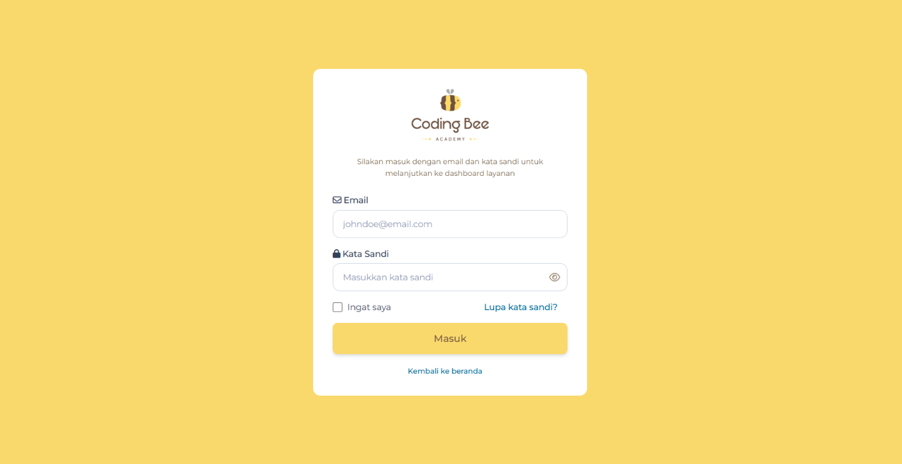
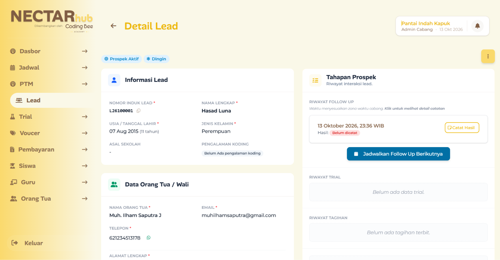

50+
Blade Views
48
Integrated Tables
~100
Operational Workflows
NECTARhub.
ActiveAn integrated platform designed to standardize company-wide operations, streamline customer communication, and improve data efficiency. It also enables parents to monitor their children's learning progress.
Core Capabilities
Customer Relationship Management
Gives parents visibility into their children's learning progress.
Google Services Integration
Connects email and calendar workflows with Google services.
Automated WhatsApp Notifications
Automates customer notifications and operational updates.